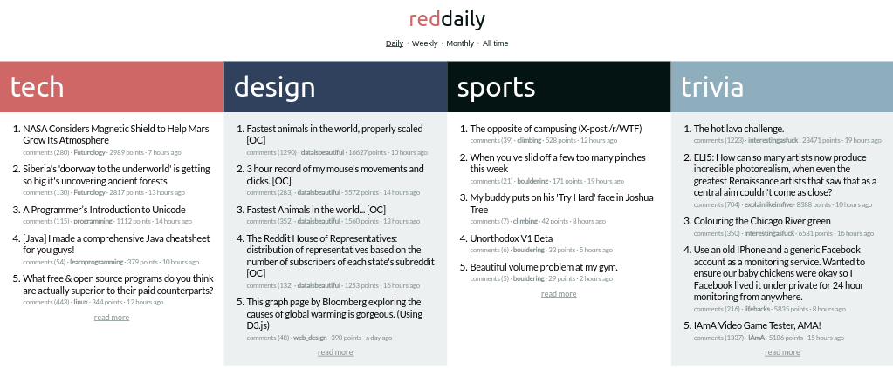
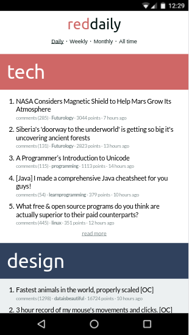

reddaily is a client-side reddit aggregator. It's designed to give you your daily dose of reddit with less of the distraction.
Give it a try here: https://beatobongco.com/reddaily/
Of course, as I ♥ responsive design, it looks good on mobile.
I browse reddit often.
Sometimes it contains interesting, mind-expanding articles and discussions relevant to my field. Oftentimes, it does not and results in an entertaining but ultimately time-wasting undertaking.
I decided one day that I would like the positive things reddit gives me without having to waste time on the negatives so I observed my own behavior for a while.
I noticed these things:
I knew right off the bat that making an aggregator was the answer. I'm a big fan of Colin Percival's Hacker News Daily. I wanted something like that.
I also wanted it to be completely client-side because that's my shtick (and so I don't have to pay to run a server).
Reddaily is extremely simple. You can take a look at it here. It just uses reddit's public JSON API which can be accessed by basically adding .json to any reddit URL.
e.g. https://www.reddit.com/r/climbing -> https://www.reddit.com/r/climbing.json
Then I just use superagent to pull the data and Vue to display. The list of subreddits can be set in a settings file.
When I made this on October of last year, I was using it daily as designed on both my laptop and phone. Prior to reddaily I was browsing reddit for around 2 hours a day.
Reddaily weaned me off browsing the actual website by scratching the itch of knowing what's new but reducing potential distraction by acting as a middleman/curator who hides and sorts posts for me and only gives me more links when I specifically request for them.
The design also helped as I made the link to the comments section non-prominent by reducing it's font size and choosing a font color that wasn't very good for readability. It's still there when I need it but it doesn't call out to be clicked.
What eventually happened was that I quit reddit almost completely. Most days I just take a quick glance at reddaily and if nothing piques my interest, I never end up on reddit at all. Mission accomplished. Not bad for a day's work! :)